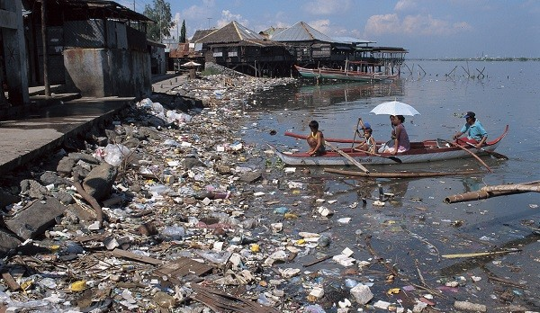

Dia de la Tierra
-
Dia de la Tierra
-
Medidas
- Aumento de los niveles del mar
- Cambios en el patrón y cantidad de precipitaciones
- Expansión de los desiertos subtropicales
- Organismos vivos.
- Clima.
- Relieve.
- Deforestación.
- Sobreforestación
- Los residuos industriales se vierten en estos cuerpos de agua. Esto provoca un desequilibrio químico en el agua que conduce a la muerte de los seres acuáticos.
- Insecticidas, pesticidas y productos químicos de maduración que se utilizan en las plantas que se usan en el sistema de aguas subterráneas o arroyos cercanos.
- Lavar la ropa cerca de lagos y ríos detergentes causa una enfermedad llamada “eutrofización”, que bloquea la luz del sol entre en el interior y reduce los valores de oxígeno en el agua, causando un ambiente inhabitable.
- Derrames de petróleo’ son causados cuando los buques petroleros gigantes y plataformas petrolíferas que están presentes en los océanos están dañadas por cualquiera tipo de error humano o natural causando un daño a largo tiempo para el océano. Como el petróleo es más ligero que el agua, flota sobre el agua formando una capa de bloqueo del luz del sol.
- Hablar sobre este asunto y lograr un dialogo para resolverlo
- Hablar y exigir a la gente desconocida que pasa por nuestra colonia que no tire basura
- Recoger la basura mediante turnos.
- No volver a tirar basura o detergente al rio.
- No quemar materiales cerca del rio en nuestra comunidad.
- Pedirle al señor del camión de basurero que pase con más frecuencia.
- No usar mucho el carro cuando no sea necesario.
- Hacer limpieza afuera de nuestras casas..
Calentamiento Global
Calentamiento Global
Calentamiento Global se refiere al aumento gradual de las temperaturas de la atmósfera y océanos de la Tierra que se ha detectado en la actualidad, además de su continuo aumento que se proyecta a futuro.Aún así, la mayor parte de la comunidad científica asegura que hay más que un 90% de certeza que el aumento se debe al aumento de las concentraciones de gases de efecto invernadero por las actividades humanas que incluyen deforestación y la quema de combustibles fósiles como el petróleo y el carbón. Estas conclusiones son avaladas por las academias de ciencia de la mayoría de los países industrializados.La proyecciones a partir de modelos de clima fueron resumidos en el Cuarto Reporte del IPCC (Panel Intergubernamental sobre Cambio Climático) en el 2007. Indican que la temperatura global probablemente seguirá aumentando durante el siglo XXI, el aumento sería de entre 1.1 y 2.9ºC en el escenario de emisiones más bajo y entre 2.4 y 6.4ºC en el de mayores emisiones. Un aumento de la temperatura global resultará en cambios como ya se están observando a nivel mundial, podemos enumerar:
El medio ambiente
El medio ambiente
El medio ambiente es el conjunto de componentes físicos, químicos, biológicos, de las personas o de la sociedad en su conjunto.1 Comprende el conjunto de valores naturales, sociales y culturales existentes en un lugar y en un momento determinado, que influyen en la vida del ser humano y en las generaciones futuras. Es decir, no se trata solo del espacio en el que se desarrolla la vida, sino que también comprende seres vivos, objetos, agua, suelo, aire y las relaciones entre ellos, así como elementos tan intangibles como la cultura. La atmósfera, que protege a la Tierra del exceso de radiación ultravioleta y permite la existencia de vida es una mezcla gaseosa de nitrógeno, oxígeno, hidrógeno, dióxido de carbono, vapor de agua, otros elementos y compuestos, y partículas de polvo. Calentada por el Sol y la energía radiante de la Tierra, la atmósfera circula en torno al planeta y modifica las diferencias térmicas. Por lo que se refiere al agua, un 97% se encuentra en los océanos, un 2% es hielo y el 1% restante es el agua dulce de los ríos, los lagos, las aguas subterráneas y la humedad atmosférica y del suelo. El suelo es el delgado manto de materia que sustenta la vida terrestre. Es producto de la interacción del clima y del sustrato rocoso o roca madre, como las morrenas glaciares y las rocas sedimentarias, y de la vegetación. De todos ellos dependen los organismos vivos, incluyendo los seres humanos. Las plantas se sirven del agua, del dióxido de carbono y de la luz solar para convertir materias primas en carbohidratos por medio de la fotosíntesis; la vida animal, a su vez, depende de las plantas en una secuencia de vínculos interconectados conocida como red trófica. Algunos factores importantes del medio ambiente son:
Tipos de Contaminación
Contaminación del agua
Como su nombre lo sugiere, “Contaminación del agua” es el tipo de contaminación que supone la contaminación distintos cuerpos de agua. Varias criaturas acuáticas dependen de estos cuerpos de agua y sus características naturales nutritivos para apoyar su vida.
Causas.
Contaminación Acustica
Esencialmente, la contaminación acústica es el tipo de contaminación que se produce por diferentes fuentes de audio que está causando la sensación de irritación, distracción para nuestro medio ambiente. Esta contaminación no es no sólo perturbar el medio ambiente sino que también produce daño a nuestra humanidad.
Causas.
Una de las principales fuentes de contaminación acústica es nuestro transporte, sobre todo el ruido provocado por los vehículos de motor. Otras fuentes incluyen las sirenas de los servicios de emergencia, alarmas, maquinaria de fábrica, equipo de oficina, trabajos de construcción, herramientas eléctricas, perros ladrando, altavoces, diferentes sistemas de audio, iluminación y escenario zumbido reuniones perturbaciones pueden causar la contaminación acústica. Entre todos estos vehículos de motor son las principales fuentes de contaminación acústica.
Contaminación Luminíca
La luz artificial se está convirtiendo en un peligro para nuestra planeta. Esta no sólo afecta a la belleza natural, sino a seres humanos, los animales, las aves y la vegetación. Por lo tanto, el ciclo de vida de los seres vivos también está siendo afectada por la contaminación lumínica. Mucha gente no sabe acerca de la contaminación lumínica, sino que se ha extendido en casi todos los países del planeta tierra. Todo el mundo se enfrenta ahora al problema de la contaminación lumínica y mucha gente y los gobiernos son conscientes de sus efectos desastrosos.La oscuridad ayuda a regular el reloj biológico humano y, debido a la exposición excesiva a la luz, el reloj biológico está siendo perturbado. La luz artificial se ha extendido tanto que la oscuridad está en peligro. En los animales nocturnos y los pájaros, los ciclos de la edad y la reproducción están siendo afectados. Las especies marinas también se ven afectados por la contaminación lumínica. Muchas tortugas dependen de las estrellas para encontrar la dirección durante la noche y aterrizan en las playas equivocadas, lo cual es peligroso para ellos.
El medio ambiente en mi comunidad
Medio Ambiente en mi comunidad.
En mi comunidad el medio ambiente es un poco contaminante, porque en algunas ocasiones la gente suela pasar y tiran la basura en el suelo o lo tiran al rio. Muchas cosas han cambiado con el paso de los años, por ejemplo me han contado los vecinos de mi comunidad que antes no habia tanta contaminaciòn en las calles, y que en el rio uno se podia meter a nadar o a bañarse, ya que el agua estaba transparente. Pero ahora las calles ya estan todas contaminadas debido a que hay mucha basura, y a pesar de que la colonia no esta tan grande hay mucha basura, y el rio ya esta de color negro, ya que hay mucha basura, de drenajes, de envaces, bolsas de chettos, etc. Por lo que en mi colonia si hay mucha contaminacion.

¿Cómo prevenir la contaminación en mi comunidad?
Para poder impidir la contaminación en mi comunidad podemos hacer diferentes acciones entre nosotros, siempre y cuándo todos estemos de acuerdo y estemos dispuestos a hacerlo. Para ello podemos hacerlo de varias maneras:
 El Día de la Tierra es un día celebrado en muchos países el 22 de abril. Su promotor, el senador estadounidense Gaylord Nelson, instauró este día para crear una conciencia común a los problemas de la superpoblación, la producción de contaminación, la conservación de la biodiversidad y otras preocupaciones ambientales para proteger la Tierra. Es un día para rendir homenaje a nuestro planeta y reconocer a la Tierra como nuestro hogar y nuestra madre, así como lo han expresado distintas culturas a lo largo de la historia, demostrando la interdependencia entre sus ecosistemas y los seres vivos que la habitamos. Es una expresión común utilizada para referirse al planeta Tierra en diversos países y regiones, lo que demuestra la interdependencia existente entre los seres humanos, las demás especies vivas y el planeta que todos habitamos y Observando que cada año se celebra el Día de la Tierra en numerosos países, decidió designar el 22 de abril como Día Internacional de la Madre Tierra
El Día de la Tierra es un día celebrado en muchos países el 22 de abril. Su promotor, el senador estadounidense Gaylord Nelson, instauró este día para crear una conciencia común a los problemas de la superpoblación, la producción de contaminación, la conservación de la biodiversidad y otras preocupaciones ambientales para proteger la Tierra. Es un día para rendir homenaje a nuestro planeta y reconocer a la Tierra como nuestro hogar y nuestra madre, así como lo han expresado distintas culturas a lo largo de la historia, demostrando la interdependencia entre sus ecosistemas y los seres vivos que la habitamos. Es una expresión común utilizada para referirse al planeta Tierra en diversos países y regiones, lo que demuestra la interdependencia existente entre los seres humanos, las demás especies vivas y el planeta que todos habitamos y Observando que cada año se celebra el Día de la Tierra en numerosos países, decidió designar el 22 de abril como Día Internacional de la Madre Tierra En 1968, Morton Hilbert y el U.S. Public Health Service (Servicio de Salud Pública de E.E.U.U.), organizaron el Simposio de Ecología Humana, se realiza una conferencia por los nombrados anteriormente para una asamblea o conferencia medioambiental para que estudiantes escucharan a científicos hablar sobre los efectos del deterioro ambiental en la salud humana.2 Este fue el primer antecedente del Día de la Tierra. Durante los siguientes dos años, Hilbert y sus estudiantes trabajaron para planear el primer Día de la Tierra.3 Surgieron otros esfuerzos como Survival Project (Proyecto para la Supervivencia), uno de los primeros eventos educacionales de conciencia ambiental, que fue llevado a cabo en la Universidad Northwestern el 23 de enero de 1970. Este fue el primero de varios eventos realizados en campus universitarios por todo Estados Unidos. Así mismo, Ralph Nader empezó a hablar acerca de la importancia de la ecología en 1970. La primera manifestación tuvo lugar el 22 de abril de 1970, promovida por el senador y activista ambiental Gaylord Nelson, para la creación de una agencia ambiental. En esta convocatoria participaron dos mil universidades, diez mil escuelas (primarias y secundarias) y centenares de comunidades. La presión social tuvo sus logros y el gobierno de los Estados Unidos creó la Environmental Protection Agency (Agencia de Protección Ambiental) y una serie de leyes destinadas a la protección del medio ambiente.Desde su comienzo en el año 1970 y con la participación en EE.UU de 20 millones de personas, el Día de la Tierra se ha convertido en una tradición mundial. Averiguar cuándo es, cómo empezó, cómo evolucionó y lo que puede hacer.
En 1968, Morton Hilbert y el U.S. Public Health Service (Servicio de Salud Pública de E.E.U.U.), organizaron el Simposio de Ecología Humana, se realiza una conferencia por los nombrados anteriormente para una asamblea o conferencia medioambiental para que estudiantes escucharan a científicos hablar sobre los efectos del deterioro ambiental en la salud humana.2 Este fue el primer antecedente del Día de la Tierra. Durante los siguientes dos años, Hilbert y sus estudiantes trabajaron para planear el primer Día de la Tierra.3 Surgieron otros esfuerzos como Survival Project (Proyecto para la Supervivencia), uno de los primeros eventos educacionales de conciencia ambiental, que fue llevado a cabo en la Universidad Northwestern el 23 de enero de 1970. Este fue el primero de varios eventos realizados en campus universitarios por todo Estados Unidos. Así mismo, Ralph Nader empezó a hablar acerca de la importancia de la ecología en 1970. La primera manifestación tuvo lugar el 22 de abril de 1970, promovida por el senador y activista ambiental Gaylord Nelson, para la creación de una agencia ambiental. En esta convocatoria participaron dos mil universidades, diez mil escuelas (primarias y secundarias) y centenares de comunidades. La presión social tuvo sus logros y el gobierno de los Estados Unidos creó la Environmental Protection Agency (Agencia de Protección Ambiental) y una serie de leyes destinadas a la protección del medio ambiente.Desde su comienzo en el año 1970 y con la participación en EE.UU de 20 millones de personas, el Día de la Tierra se ha convertido en una tradición mundial. Averiguar cuándo es, cómo empezó, cómo evolucionó y lo que puede hacer.